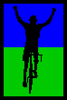
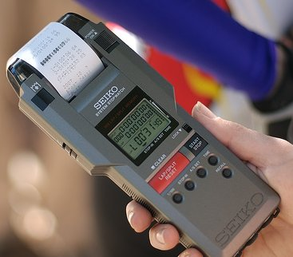

|  |
2007 Low-Key Hillclimbs Overall Results |
|  |
| John Gale photo |
After week 9, Tim Clark (team: Red Dragon) leads the men's standings, 32.1 points ahead of 2nd-place Clark Foy, with 3rd-place Thomas Novikoff a full 51.3 points back. Among the women, Janet Martinez (team: Friends of Janet) leads by 2 points over second-place Lucia Mokres, with Margie Biddick in third. Webcor/Alto Velo is at the head of the team standings, followed by Bike Trip and San Jose Bike Club. Webcor/Alto Velo's win is by a mind-blowing margin of 0.30 points. Every second counts! .
Thanks to our great volunteers for making this series succeed!
pl # rider team category week1 week2 week3 week4 week5 week6 week7 week8 week9 overall 1 244 Bill Bushnell TNT Hybrid 100.00 100.00 100.00 100.00 100.00 - - 100.00 100.00 500.00
pl # rider team category week1 week2 week3 week4 week5 week6 week7 week8 week9 overall 1 210 Tim Clark Red Dragon 35+ 132.43 127.49 132.84 127.66 120.16 129.45 113.16 132.67 --V-- 659.23 2 39 Clark Foy San Jose Bike Club 40+ - 123.61 --V-- 126.83 - 125.50 125.76 - 122.01 627.13 3 217 Thomas Novikoff Cambio 2 126.58 - 127.08 - - 117.32 - 120.91 115.98 607.86 4 141 Carl A. Nielson Pegasus 45+ - - 123.20 124.16 - 118.27 111.24 126.92 - 603.80 5 54 Justin Lucke Google Vegan 114.19 117.45 - 119.70 99.59 121.23 119.44 122.15 119.05 601.57 6 45 Rupert Brauch Webcor/Alto Velo 3 119.40 120.59 122.01 116.86 114.41 115.81 --V-- - - 598.57 7 328 Mark Edwards Bike Trip 45+ - 124.46 - 121.30 114.62 113.31 - 118.58 115.88 594.84 8 1 Dan Connelly TNT 3 --V-- 121.13 118.30 101.86 --V-- 118.27 102.10 117.57 115.52 594.08 9 97 Greg McQuaid Western Wheelers 35+ 114.56 118.39 122.15 117.50 - - - 117.10 114.94 590.08 10 17 Brian Edwards Hell Riders 25-29 - - 120.77 117.78 110.72 - 115.98 117.95 115.62 588.09 11 213 Tom Gardin 35+ 121.15 118.30 - 113.56 107.30 - - 116.72 112.31 582.04 12 142 Rich Hill LGBRC 40+ 113.53 116.27 111.46 109.59 109.14 113.79 - 115.14 112.29 571.02 13 124 Jeff Farnsworth San Jose Bike Club 50+ - 110.13 113.05 111.96 - - 114.20 108.11 112.68 562.01 14 116 Shance Ordell Western Wheelers 35+ 111.12 108.73 111.87 111.00 106.86 - - - - 549.58 15 277 DJ Novotney 30+ - 109.83 - 110.59 - 107.45 - 110.92 108.61 547.40 16 323 Scott Martin Bike Trip 50+ - 108.73 - 108.22 103.64 108.81 - 108.04 109.23 543.03 17 122 Michael Gonia Republic of Anaerobia 40+ 107.62 105.14 110.20 - - 108.31 100.90 109.97 101.02 541.23 18 20 James Porter Western Wheelers Out Of Shape Dads 107.78 - 102.59 - --V-- 92.51 --V-- 109.90 111.43 539.62 19 67 Martin Hyland Western Wheelers 50+ 108.54 - 100.66 106.22 106.61 --V-- 97.13 105.93 109.19 538.19 20 267 Crist Clark Webcor/Alto Velo 35+ 107.78 106.52 105.06 - 103.40 - --V-- 106.37 - 532.15 21 250 Ian Sowden 101.46 105.69 104.14 - 100.48 105.94 - 107.98 104.59 528.33 22 4 Fred E. Stamm Pen Velo/Kondra 55+ 106.60 106.52 105.78 108.80 - 97.52 - - 100.00 527.70 23 264 Luke Burton LGBRC 5 102.63 105.21 102.69 106.86 104.72 99.47 - 103.41 100.07 522.89 24 344 Harvey Wong Friends of Janet 35+ - - - 101.20 102.42 106.72 - 107.65 103.48 521.46 25 265 Steven Woo LGBRC 4 - 104.27 - 103.15 102.89 - 101.64 101.02 98.80 512.96 26 307 Christian Paquet Doogie 50+ - 101.28 97.72 102.53 100.84 - - 105.18 99.93 509.75 27 6 Greg Dougald AV: Old Guys Finish 45+ 105.66 101.34 --V-- - 99.21 92.56 89.94 - 99.53 507.17 28 238 Michael Kim 45+ 100.00 100.53 100.71 104.28 97.45 - - 91.08 - 502.96 29 301 Michael Wright SRI 50+ - - 101.09 101.80 98.74 101.39 94.99 98.35 - 501.37 30 233 Rand Hill Apple 35+ 99.26 100.03 - 100.00 99.65 98.54 - 101.88 - 500.82 31 283 Dan Talayco Two Wheel Tango 40+ - 99.85 98.94 - 99.02 - - 100.00 100.34 498.15 32 273 Calvin Do Skinny slow guys 35+ 98.94 98.87 --V-- 97.52 96.96 - - 91.27 95.24 490.37 33 303 Tom Workman STVC 40+ - 101.66 96.96 - 98.27 94.36 87.41 95.72 - 486.97 34 236 Paul Melville Doogie 55+ 96.11 97.98 - 98.01 96.81 - - 96.23 - 485.14 35 229 Michael Czepiel Apple 20-24 94.42 98.52 93.65 97.16 97.23 91.84 - 96.59 - 483.92 36 232 Matt Rodnick Recreational 91.95 97.63 94.61 95.98 94.11 - - 93.41 - 475.74 37 212 Pete Jollymour 6 94.92 97.16 86.57 95.26 94.39 86.98 71.90 92.02 92.28 474.01 38 276 Genti Cuni Climbing Turtles 91.87 99.97 92.76 92.83 - --V-- - - 86.91 471.79 39 259 Joshua Hadley Republic of Anaerobia - 99.18 83.82 - --V-- 91.22 - 96.08 90.58 471.31 40 34 Stephen Fong Blubber Busters 5 91.44 95.62 94.48 94.72 92.85 88.15 87.82 - - 469.11 41 352 Geoff Drake Bike Trip 45+ - - - 118.50 113.91 115.24 - 118.58 - 466.23 42 201 Vinay Ravuri Georgia Tech Beginner 97.15 - 93.86 92.52 89.30 89.07 - 90.94 87.82 463.77 43 149 Steve Sprang Apple 30+ 91.95 94.45 - 91.69 93.40 - - 83.62 91.69 463.18 44 64 Keith Devlin Western Wheelers 60+ - 91.06 89.17 92.69 90.12 - - 90.07 89.89 453.84 45 77 Jorge Chang Blubber Busters Infinity 88.03 92.73 92.12 89.09 - 85.29 73.99 - - 447.26 46 284 John Walker Google 40+ - - 115.36 - - 111.18 108.33 - 108.91 443.78 47 239 Joerg Heilig Google 35+ 112.23 110.88 - - - - - 109.97 104.49 437.57 48 318 Jeff Botelho TFSF 45+ - - - 106.13 - 109.82 - 108.90 108.72 433.56 49 225 Bogdan Florea 35+ 89.31 91.17 - - - 78.78 - 83.54 83.58 426.39 50 49 Adam Tow Blubber Busters Infinity 83.74 83.88 73.16 --V-- 86.72 --V-- 67.80 77.23 80.98 419.15 51 300 Wade Bastien 35+ - 86.79 76.76 82.57 --V-- - - - 76.13 402.81 52 140 Gary Griffin Team Santa Cruz 55+ 100.66 - 98.17 - - 96.87 - 98.03 - 393.72 53 331 Rob Boyer LGBRC 50+ - - - 99.44 - 97.83 - 97.23 96.73 391.22 54 231 Murali Krishnan Commuter 35+ 80.81 80.11 76.13 75.18 - 53.22 - 75.12 - 387.35 55 219 Sean Broeder Silicon Valley Triathlon Club 35+ 91.56 93.69 95.88 - - - - 97.49 - 378.62 56 224 Eric Balfus 2 126.28 122.77 124.13 - - - - - - 373.18 57 274 Simon Chan Liuchan 35+ - --V-- 85.74 - 89.68 88.82 - - - 352.31 58 282 Ammon Skidmore Roaring Mouse 30+ 112.46 116.77 122.29 - - - - - - 351.52 59 272 Martin Hampton Pen Velo/Kondra - 87.63 84.25 - 89.02 87.38 - - - 348.28 60 81 Ramon Alarcon San Jose Bike Club 35+ - - - - - - 113.04 118.74 115.74 347.52 61 70 Bob Parker AV: Old Guys Finish 50+ - 89.46T - 87.55T - 82.32T - 88.03T - 347.36 62 41 Chris Boardman The Cutters 5 70.70 - 52.62 - 80.60 --V-- - - 72.25 345.22 63 309 Dan Hicklin LGBRC 4 - - - 113.69 - 114.75 - 112.89 - 341.33 64 16 Peter Mehlitz Tired 113.29 - 112.28 - 114.03 - - - - 339.60 65 221 Jenson Lee Kahala La Grange 2 116.23 116.69 - - - - - - 106.30 339.22 66 94 Todd Benjamin Apple 40+ 86.30 83.40 - 82.29 86.32 - - - - 338.31 67 278 Chris Heisterkamp Google Male - 109.31 110.08 - - - - 109.50 - 328.89 68 335 Jim Langley Bike Trip 50+ - - - - 106.68 - - 112.67 109.19 328.54 69 48 David Kelly Webcor/Alto Velo 30+ - - - - 109.18 - - 110.86 108.08 328.11 70 322 Christopher Bosch Google 5 Wannabee - - - - - 112.43 - 103.06 109.04 324.53 71 37 Bill Lloyd Six Fifty 1 - - 109.07 - 110.64 - - 104.02 - 323.73 72 400 Lucas Pereira Google 5 - - - - - - 104.58 109.97 102.18 316.73 73 237 Bill Preucel Friends of Janet 45+ 102.14 - - - 100.19 - - 101.77 - 304.10 74 343 Matt Werner Bike Trip 45+ - - - - 103.27 102.89 - - 95.32 301.47 75 29 Dean Larson Team Dino 40+ - - - 101.80 - 100.37 - 99.00 - 301.18 76 295 Brian Schmitz Friends of Janet 4 - - - - 100.00 - - 98.46 101.19 299.64 77 255 John Franklin Old School 35+ 107.29 - --V-- - - - - - 92.12 299.11 78 166 Todd Manley San Jose Bike Club 6'9" 88.00 96.47 - - - - - - 108.48 292.95 79 347 Michael Kirkpatrick SRI 4 - - - - - 100.00 - 94.90 96.28 291.18 80 325 Kevin Fetterman Sunburnt DJ 40+ - - - 99.72 - 91.61 - 99.61 - 290.94 81 376 Robert Ballard Grizzly Peak Cyclists - - - --V-- - - - 95.05 95.15 285.31 82 280 Patrick Kenny Google - - 86.57 97.59 - - - 99.39 - 283.55 83 216 Guy Coté 35+ 86.44 89.46 - - - - - 83.94 - 259.84 84 338 Mark King Fremont Freewheelers 4 - - - - - 79.01 - 90.48 88.69 258.19 85 364 Chris Isley Webcor/Alto Velo 4 - - - - - - - 132.76 122.52 255.29 86 228 Teodor Doru Cuturela 30+ 85.17 86.79 81.40 - - - - - - 253.36 87 248 Michael Grundmann UCSB 4 126.28 - 125.44 - - - - - - 251.72 88 177 Dan Stober Western Wheelers 55+ - 86.46 - - - - - 80.46 81.68 248.60 89 336 Ed Noskowski Leafy Joe 45+ - - - 82.80 - 79.05 - 82.65 - 244.50 90 390 Dan Siehl Valley Presbyterian Superannuated Biochemist - - - - - 78.39 81.43 79.81 - 239.63 91 402 Gary Gellin Webcor/Alto Velo 35+ - - - - - 126.68 111.91 - - 238.59 92 103 Toby Booth Webcor/Alto Velo 30+ 80.24 - 77.54 - - - - 76.76 - 234.54 93 165 Allen Wulczynski San Jose Bike Club 45+ - 110.96 - 111.32 - - - - - 222.27 94 254 Richard Allen Webcor/Alto Velo 55+ - 70.40 - 75.69 - - - - 75.86 221.95 95 319 Joe Platin Bike Trip 45+ - 111.49 - - - - - 104.93 - 216.42 96 417 Peter Cazalet Webcor/Alto Velo - - - - - - - 110.17 104.04 214.21 97 290 Mike Schuster Google 40+ - - 108.57 - - 105.12 - - - 213.69 98 176 Dave Rossow Webcor/Alto Velo 35+ - - 105.99 - - 102.89 - - - 208.88 99 368 Tim Sullivan 40+ - - - - - - - 102.82 104.69 207.51 100 349 Dennis Pedersen Bike Trip 45+ - - - - 103.10 - 103.23 - - 206.33 101 271 John Toor 45+ - 102.43 - - - - - - 103.49 205.92 102 88 Peter Tapscott AV: Old Guys Finish 50+ - - - - - - - 100.11 104.35 204.46 103 316 Gary Broder San Jose Bike Club 50+ - 98.81 105.00 - - - - - - 203.82 104 262 Chris Gaffney Republic of Anaerobia 40+ - - 100.00 - 102.72 - - - - 202.72 105 204 Scott Khirck Wild Things Junior 102.04 99.97 - - - - - - - 202.01 106 222 Mike Salamen 50+ 103.37 - - - - - - - 98.63 202.00 107 354 Chad Rosser Republic of Anaerobia Triathlete - - - - - 107.20 92.40 - - 199.60 108 50 Francis Cebedo RoadBikeReview 5 - - - - - - 99.11 99.39 - 198.50 109 370 Steve Blair Friends of Janet 50+ - - - - - 97.22 - 97.07 - 194.29 110 9 Ken Straub Team Bikeaholics Older Than You 99.35 - - - - - - - 93.20 192.55 111 251 Paul Forti 30+ 94.17 97.22 - - - - - - - 191.39 112 21 Pete Heller AV: Old Guys Finish 50+ - - --V-- - - - - - 90.55 181.10 113 110 Edward Miller SLACer 65+ - - 91.18 89.75 - - - - - 180.93 114 287 Rafael Ornes Valley Presbyterian 45+ - 96.93 - - - 83.44 - - - 180.37 115 211 Eric Melville Apple Cargo 89.65 - - - - - --V-- - - 179.30 116 337 Bruce Swanson Leafy Joe 45+ - - - 90.60 - - - 85.22 - 175.82 117 372 Ryan P.C. Gibson Google - - - - - - - 85.22 89.01 174.22 118 333 Cris Maltzman 45+ - - - 84.78 - - - - 84.09 168.87 119 408 Richard Contreras - - - - - - 80.61 - 81.57 162.18 120 89 JT Conklin Identity Engines 35+ 82.17 - - 79.36 - - - - - 161.53 121 266 Paul Schreiber Apple Slow - 84.31 75.49 - - - - - - 159.80 122 200 Chris Phipps Z 2 137.25 - - - - - - - - 137.25 123 10 Dick Robinson TNT 59+ 68.58 - - - - - - --V-- - 137.16 124 380 Fred Butts TNT 65+ - - - - - - - 67.21 --V-- 134.41 125 429 Ted Huang Webcor Builders 1 - - - - - - - 128.47 - 128.47 126 43 Scott Frake Webcor/Alto Velo Bald 128.32 - - - - - - - - 128.32 127 61 Jens Heycke Me 45+ 126.28 - - - - - - - - 126.28 128 51 Tracy Colwell Team Colwell 2 - - - - - - - - 125.69 125.69 129 304 Jesus Aguirre Superior - - - - - - - - 125.15 125.15 130 215 Jon Ornstil Zoom 45+ 124.88 - - - - - - - - 124.88 131 243 John Davern 35+ 124.16 - - - - - - - - 124.16 132 382 Todd Sinclair Team Shonky 30+ - - - - - 123.61 - - - 123.61 133 410 Yuval Rachmilevitz 35+ - - - - - - - - 122.98 122.98 134 245 Aaron Peterson Webcor/Alto Velo 3 121.15 - - - - - - - - 121.15 135 74 Dominic Giampaolo Webcor/Alto Velo - - - - - - - 119.61 - 119.61 136 315 Ken Gallardo Pen Velo/Kondra 30+ - 118.82 - - - - - - - 118.82 137 242 Mark Johnson Webcor/Alto Velo 3 115.61 - - - - - - - - 115.61 138 379 Bo Habenstreit Webcor/Alto Velo 3 - - - - - - - - 114.66 114.66 139 299 Andrew Nevitt San Jose Bike Club 40+ - 114.63 - - - - - - - 114.63 140 385 Todd Studenicke San Jose Bike Club - - - - - - - - 113.93 113.93 141 85 Chris Soukup San Jose Bike Club 35+ - 112.65 - - - - - - - 112.65 142 391 Billy Crane Webcor/Alto Velo 4 - - - - - - - - 111.32 111.32 143 334 Greg Moore Catellus Masters - - - - - - - - 111.09 111.09 144 411 James Badia Webcor/Alto Velo - - - - - - - 111.06 - 111.06 145 158 Charles Pockell-Wilson Equipe Mod Classique 40+ - - - - - - - - 110.36 110.36 146 320 Eddie Broeder San Jose Bike Club Junior 15 - 110.35 - - - - - - - 110.35 147 207 Steve Paterson 45+ 110.04 - - - - - - - - 110.04 148 425 Tully Cashman 4 - - - - - - - - 109.86 109.86 149 296 Matt Boxemeier San Jose Bike Club 35+ - 109.76 - - - - - - - 109.76 150 18 Jeff Loufit 50+ 108.32 - - - - - - - - 108.32 151 358 Josh Beisel Indiana University 25-29 - - - - - 108.00 - - - 108.00 152 65 Martin Voogel Webcor/Alto Velo 35+ 107.78 - - - - - - - - 107.78 153 241 Oliver Chan Voler 4 107.35 - - - - - - - - 107.35 154 369 Ernest Schimmerling PMVC 40+ - - - - - - - - 107.14 107.14 155 317 Chad Roemer Genentech 35+ - - - 105.93 - - - - - 105.93 156 100 Oswaldo Orozco San Jose Bike Club Fat-And-Heavy 40+ - - - 104.73 - - - - - 104.73 157 413 David Quincy 45+ - - - - - - - - 104.43 104.43 158 362 Greg Durbin Santa Rosa Cycling Club 50+ - - - - - 104.19 - - - 104.19 159 377 Edward Webh San Jose Bike Club 45+ - - - - - - - - 103.81 103.81 160 416 David Womer Super Mid-Life Crisis - - - - - - - - 103.32 103.32 161 363 Ricky Lucero San Jose Bike Club - - - - - - - - 103.15 103.15 162 443 Miles Cowherd 40+ - - - - - - - - 102.29 102.29 163 392 Bryan Canali - - - - - - - 102.06 - 102.06 164 348 Carl Butler Friends of Janet 50+ - - - 101.96 - - - - - 101.96 165 314 Joe Sheredy Republic of Anaerobia Middle Of The Pack - - - - 101.92 - - - - 101.92 166 381 David Farinha San Jose Bike Club Junior - - - - - - - - 101.91 101.91 167 375 Phil Alne LGBRC 4 - - - - - - - - 101.35 101.35 168 115 John Murphy CalTrain 35+ 101.08 - - - - - - - - 101.08 169 206 Mark La Forge 45+ 100.28 - - - - - - - - 100.28 170 395 Robert Orontt 5 - - - - - - - - 100.22 100.22 171 253 Chris Harrison La Dolce Velo Junior - 99.85 - - - - - - - 99.85 172 397 Mike Williams Friends of Janet - - - - - - - 99.83 - 99.83 173 350 Jacob Rodak 20-24 - - - - - - - - 98.86 98.86 174 383 Mark Hlady Independent - - - - - - - - 98.49 98.49 175 329 Eric Hamilton MO-DV 50+ - - - - - - - 98.24 - 98.24 176 398 Kirt Liittschwager Webcor/Alto Velo 45+ - - - - - 97.67 - - - 97.67 177 218 Mike Peltier 40+ 97.28 - - - - - - - - 97.28 178 156 Eric Murray Webcor/Alto Velo 45+ - - - - - - - - 97.06 97.06 179 257 Allen Brumm TNT 4 - - - - 96.84 - - - - 96.84 180 384 Dan Rohrer Leafy Joe - - - - - - - 96.49 - 96.49 181 135 Larry Munoz Republic of Anaerobia 45+ - - - - - - - - 96.23 96.23 182 419 Akin Dirik Webcor/Alto Velo 40+ - - - - - - - - 95.65 95.65 183 378 Todd Stavish Team Shonky Nothing - - - - - 95.55 - - - 95.55 184 99 Roberto St. Domingo San Jose Bike Club 50+ - - - 95.26 - - - - - 95.26 185 205 Pete Petruski Western Wheelers Beyond 95.21 - - - - - - - - 95.21 186 409 Alan Weatherall San Jose Bike Club 45+ - - - - - - - - 94.91 94.91 187 234 Pete Christiansen 40+ 94.88 - - - - - - - - 94.88 188 346 Joe Farinha San Jose Bike Club 45+ - - - - - - - - 94.83 94.83 189 426 Matt Beebe Webcor/Alto Velo - - - - - - - 94.80 - 94.80 190 359 James Keller - - - - - - - - 94.10 94.10 191 178 John Mitchell Western Wheelers 50+ - 94.01 - - - - - - - 94.01 192 172 Robert Werner Webcor/Alto Velo 30+ - - - - - - - - 93.39 93.39 193 345 Derek Mau RoadBikeReview - - - - - - - 92.88 - 92.88 194 388 Sean Wayman LGBRC 5 - - - - - - - 92.73 - 92.73 195 308 John Hosteler San Jose Bike Club 45+ - 92.62 - - - - - - - 92.62 196 227 Brian Becker 2 92.27 - - - - - - - - 92.27 197 341 Tim Grie Olympic Club 50+ - - - 92.25 - - - - - 92.25 198 353 Hans de Roos GDI Dutch - - - - - - - - 92.21 92.21 199 286 William von Kaenel LGBRC 40+ - - 91.65 - - - - - - 91.65 200 208 Ryan Knotts San Jose Bike Club 5 91.60 - - - - - - - - 91.60 201 209 Anthony Tomlinson 91.44 - - - - - - - - 91.44 202 291 Jay Kilby LGBRC 40+ - 91.42 - - - - - - - 91.42 203 226 Dimitri Proano Apple 35+ 90.59 - - - - - - - - 90.59 204 288 David Cook Balboa Slow - 90.51 - - - - - - - 90.51 205 399 Eric Powell - - - - - - - - 90.42 90.42 206 365 Gino Cetani Chain Reaction Sick - - - - - - - - 89.47 89.47 207 203 David Walker ZZZZZZ 45+ 88.72 - - - - - - - - 88.72 208 263 Travis Selk Mako/De Marco Slow Guys - - - - 87.97 - - - - 87.97 209 326 Jim Heiser Apple 35+ - - - 87.53 - - - - - 87.53 210 434 Mike Reed Western Wheelers 45+ - - - - - - - - 87.41 87.41 211 436 Matt Batz San Jose Bike Club 4 - - - - - - - - 87.30 87.30 212 297 Mike Cole Tricity Triclub Multisport - - - - 87.28 - - - - 87.28 213 321 Geoff Patterson - - - - - - - - 86.78 86.78 214 261 Jeffrey Treat Brothers Treat 86.47 - - - - - - - - 86.47 215 268 Michael Navone Intermediate - - 85.94 - - - - - - 85.94 216 119 J.L. de Jong Menso's Dad 45+ 83.29 - - - - - - - - 83.29 217 428 Jan Berka 45+ - - - - - - - - 82.84 82.84 218 405 Aaron Thomas - - - - - - - - 82.32 82.32 219 404 Mark Valentino San Jose Bike Club 5 - - - - - - 82.15 - - 82.15 220 330 Tom Yonker Western Wheelers 45+ - - - - 81.78 - - - - 81.78 221 258 Sean Treat Brothers Treat 30+ 81.70 - - - - - - - - 81.70 222 306 C. Pistor 40+ - - 81.68 - - - - - - 81.68 223 15 Rich Brunner Cruzie 39ish - 80.47 - - - - - - - 80.47 224 401 David Hanel 35+ - - - - - - - - 80.21 80.21 225 340 Jon Boas TFSF 65+ - - - 79.30 - - - - - 79.30 226 374 Darren Wood Team Shonky Bad - - - - - 79.11 - - - 79.11 227 351 Jeff Swan Team Spike - - - - - - - 79.00 - 79.00 228 312 Jonathan Racine San Jose Bike Club 35+ - 78.04 - - - - - - - 78.04 229 311 Derrick Hemingway San Jose Bike Club 40+ - 78.00 - - - - - - - 78.00 230 342 Jim Wholey 60+ - - - - - - - - 77.22 77.22 231 223 Chris Comuto 30+ 76.99 - - - - - - - - 76.99 232 164 David Knight San Jose Bike Club Fat And Slow - - - - - - - - 75.87 75.87 233 396 Al Painter Sport Velo 5 - - - - - - 73.36 - - 73.36 234 366 Michael Babb Me 35+ - - - - - 73.23 - - - 73.23 235 407 Jens McNaughton Apple - - - - - - - 73.00 - 73.00 236 393 Mike Guitterrez - - - - - - - - 72.78 72.78 237 437 Carlos Perez Trappist 37+ - - - - - - - - 72.30 72.30 238 406 Gento Kusano San Jose Bike Club Junior - - - - - - - - 72.16 72.16 239 132 Joseph Maurer RUSA 60+ - - - - - - - - 71.60 71.60 240 202 Brian Gothberg Wilcox Junior 70.94 - - - - - - - - 70.94 241 403 Daniel Colbert Webcor/Alto Velo 5 - - - - - - - 69.37 - 69.37 242 298 Keith Petty 35+ - - - 68.65 - - - - - 68.65 243 235 Paul Nixon Apple 30+ 68.34 - - - - - - - - 68.34 244 313 Michael Reicherl Republic of Anaerobia 40+ - - - - - 68.03 - - - 68.03 245 355 Martin Brandt - - - - - - - - 63.65 63.65 246 294 Doug Simpkinson Webcor/Alto Velo Bionic - - 57.84 - - - - - - 57.84 247 302 Steve Raymond 45+ - - - 47.65 - - - - - 47.65 247 293 Steve Romak 45+ - - - 47.65 - - - - - 47.65 247 310 Mark Raymond 60+ - - - 47.65 - - - - - 47.65 T : tandem score
pl # rider team category week1 week2 week3 week4 week5 week6 week7 week8 week9 overall 1 240 Janet Martinez Friends of Janet 40+ 123.35 - - 130.37 123.43 100.48 - 127.89 128.24 633.28 2 270 Lucia Mokres LGBRC 4 122.89 - - 129.64 - 109.69 98.61 137.31 131.76 631.29 3 332 Margie Biddick Bike Trip 4 - 124.82 110.20 118.74 109.98 99.53 - 123.58 120.43 597.76 4 154 Anny Henry CRC 3 - 135.08 122.78 130.64 - - - - 117.38 505.88 5 95 Kelly Kasik Apple 95.82 107.13 91.08 100.37 101.26 - - - --V-- 505.73 6 71 Marie Borselle Velogirls 40+ - 97.37 - 92.81 91.98 - - --V-- 90.18 465.42 7 279 Nuria Bertran Climbing Turtles Beginner 88.20 98.85 83.61 94.77 - - - - 85.60 451.04 8 111 Pat Parseghian Google 50+ 78.48 87.43 --V-- 90.03 95.32 --V-- - 87.29 86.36 450.08 9 27 Christine Holmes Librarian 40+ - 84.34 - 79.29 87.31 --V-- - 71.11 - 402.56 10 246 Amy Tam Velogirls 76.57 82.98 54.30 82.76 - - - - --V-- 370.77 11 252 Irene Franklin Old School 30+ 119.35 - 115.06 - - - - - 116.70 351.11 12 324 Ileana Parker Webcor/Alto Velo Tandem - 89.46T - 87.55T - 82.32T - 88.03T - 347.36 13 260 Mary Ellen Allen Webcor/Alto Velo 55+ - 112.16 - 110.09 - - - - 103.24 325.48 14 281 Cara Coburn TNT 40+ --V-- --V-- - - - - - 98.08 94.49 288.86 15 305 Anne Findlay JDRF 30+ - - - - 99.20 55.94 - - 92.68 247.82 16 256 Alison Chaiken Western Wheelers 40+ - - 100.00 - - - - 110.91 - 210.91 17 394 Holly Harris Tibco 45+ - - - - - 102.75 101.43 - - 204.18 18 423 Juliana Chen TNT --V-- - - - - - - 91.22 - 182.44 19 249 Judith Alderman Velogirls 35+ 77.37 - - - - - - 101.08 - 178.44 20 420 Janet LaFleur TNT - --V-- - - - - - 88.87 - 177.74 21 432 Christine Thorburn Webcor Builders 1 - - - - - - - 151.19 - 151.19 22 230 Laura Stern TNT 45+ 120.90 - - - - - - - - 120.90 23 373 Melanie Dominguez Bike Trip Dirt Woman - - - - - - - - 110.28 110.28 24 422 Connie Jaremczuk Western Wheelers 4 - - - - - - - - 109.87 109.87 25 220 Aimee Baker Protech 35+ 106.26 - - - - - - - - 106.26 26 247 Daniela Becker Roaring Mouse 4 103.98 - - - - - - - - 103.98 27 292 Christie Craig Slow - 101.17 - - - - - - - 101.17 28 285 Carole Sykes Western Wheelers Slower Than I Would Like! - - - - 100.81 - - - - 100.81 29 357 Lorri Lee Lown Velogirls 40+ - - - - - - - - 100.00 100.00 29 356 Laura Jump Team Spike - - - - - - - 100.00 - 100.00 31 275 Leah Edwards 25-29 - - - 99.63 - - - - - 99.63 32 440 Kris Cowherd 40+ - - - - - - - - 98.68 98.68 33 214 Laura Dunn Friends of Janet 96.32 - - - - - - - - 96.32 34 360 Gail Stanley Team Spike - - - - - - - 94.79 - 94.79 35 361 Dana Freedman Velogirls Slow - - - - - - - - 85.12 85.12 36 367 Sarah Elson TNT - - - - - - - - 79.01 79.01 37 386 Sara Good Friends of Janet Girl - - - - - 58.20 - - - 58.20 T : tandem score
pl team week1 week2 week3 week4 week5 week6 week7 week8 week9 overall 1 Webcor/Alto Velo 368.87 339.26 333.06 314.50 326.99 345.37 335.92 363.44 348.50 1765.43 (Allen,Allen,Badia,Beebe,Booth,Brauch,Cazalet,Clark,Colbert,Crane,Dirik,Frake,Gellin,Giampaolo,Habenstreit,Isley,Johnson,Kelly,Liittschwager,Murray,Parker,Peterson,Rossow,Simpkinson,Voogel,Werner) 2 Bike Trip - 360.77 110.20 358.54 338.50 337.36 103.23 360.74 346.59 1765.13 (Biddick,Dominguez,Drake,Edwards,Langley,Martin,Pedersen,Platin,Werner) 3 San Jose Bike Club 179.60 350.89 342.80 350.11 - 125.50 353.00 226.84 351.67 1748.47 (Alarcon,Batz,Boxemeier,Broder,Broeder,Domingo,Farinha,Farinha,Farnsworth,Foy,Hemingway,Hosteler,Knight,Knotts,Kusano,Lucero,Manley,Nevitt,Orozco,Racine,Soukup,Studenicke,Valentino,Weatherall,Webh,Wulczynski) 4 LGBRC 339.04 325.75 305.79 352.93 316.75 338.23 200.24 365.34 345.40 1740.94 (Alne,Boyer,Burton,Hicklin,Hill,Kaenel,Kilby,Mokres,Wayman,Woo) 5 Google 304.90 337.64 334.02 307.33 194.90 344.84 332.36 342.08 336.99 1695.58 (Bosch,Gibson,Heilig,Heisterkamp,Kenny,Lucke,Parseghian,Pereira,Schuster,Walker) 6 Western Wheelers 334.22 321.13 336.60 334.71 318.32 197.41 201.97 337.92 336.24 1679.69 (Chaiken,Devlin,Hyland,Jaremczuk,McQuaid,Mitchell,Ordell,Petruski,Porter,Reed,Stober,Sykes,Yonker) 7 Friends of Janet 321.81 - - 333.53 326.04 304.42 - 337.30 332.90 1651.59 (Blair,Butler,Dunn,Good,Martinez,Preucel,Schmitz,Williams,Wong) 8 TNT 334.43 317.41 218.30 201.86 310.38 118.27 102.10 315.64 310.01 1587.87 (Brumm,Bushnell,Butts,Chen,Coburn,Connelly,Elson,LaFleur,Robinson,Stern) 9 Apple 289.50 305.68 260.22 297.53 298.14 190.38 89.65 282.10 190.82 1472.95 (Benjamin,Czepiel,Heiser,Hill,Kasik,McNaughton,Melville,Nixon,Proano,Schreiber,Sprang) 10 Republic of Anaerobia 107.62 204.32 294.02 - 296.82 306.73 193.30 206.04 287.83 1391.44 (Gaffney,Gonia,Hadley,Munoz,Reicherl,Rosser,Sheredy) 11 Blubber Busters 263.22 272.22 259.77 262.88 179.57 252.51 229.61 77.23 80.98 1310.60 (Chang,Fong,Tow) 12 AV: Old Guys Finish 105.66 190.80 188.59 87.55 99.21 174.87 89.94 188.14 294.43 1036.84 (Dougald,Heller,Parker,Tapscott) 13 Velogirls 153.94 180.34 54.30 175.57 91.98 - - 194.16 275.30 979.32 (Alderman,Borselle,Freedman,Lown,Tam) 14 Climbing Turtles 180.07 198.82 176.38 187.60 - 92.87 - - 172.51 915.38 (Bertran,Cuni) 15 Pen Velo/Kondra 106.60 312.97 190.04 108.80 89.02 184.90 - - 100.00 903.31 (Gallardo,Hampton,Stamm) 16 Doogie 96.11 199.26 97.72 200.54 197.65 - - 201.41 99.93 898.79 (Melville,Paquet) 17 SRI - - 101.09 101.80 98.74 201.39 94.99 193.25 96.28 696.27 (Kirkpatrick,Wright) 18 Red Dragon 132.43 127.49 132.84 127.66 120.16 129.45 113.16 132.67 126.98 655.05 (Clark) 19 Old School 226.64 - 214.77 - - - - - 208.82 650.23 (Franklin,Franklin) 20 Cambio 126.58 - 127.08 - - 117.32 - 120.91 115.98 607.86 (Novikoff) 21 Pegasus - - 123.20 124.16 - 118.27 111.24 126.92 - 603.80 (Nielson) 22 Hell Riders - - 120.77 117.78 110.72 - 115.98 117.95 115.62 588.09 (Edwards) 23 Leafy Joe - - - 173.40 - 79.05 - 264.36 - 516.81 (Noskowski,Rohrer,Swanson) 24 TFSF - - - 185.43 - 109.82 - 108.90 108.72 512.86 (Boas,Botelho) 25 CRC - 135.08 122.78 130.64 - - - - 117.38 505.88 (Henry) 26 Two Wheel Tango - 99.85 98.94 - 99.02 - - 100.00 100.34 498.15 (Talayco) 27 Skinny slow guys 98.94 98.87 96.47 97.52 96.96 - - 91.27 95.24 488.77 (Do) 28 STVC - 101.66 96.96 - 98.27 94.36 87.41 95.72 - 486.97 (Workman) 29 Georgia Tech 97.15 - 93.86 92.52 89.30 89.07 - 90.94 87.82 463.77 (Ravuri) 30 Roaring Mouse 216.44 116.77 122.29 - - - - - - 455.50 (Becker,Skidmore) 31 Valley Presbyterian - 96.93 - - - 161.83 81.43 79.81 - 420.00 (Ornes,Siehl) 32 Librarian - 84.34 - 79.29 87.31 80.51 - 71.11 - 402.56 (Holmes) 33 Team Santa Cruz 100.66 - 98.17 - - 96.87 - 98.03 - 393.72 (Griffin) 34 Commuter 80.81 80.11 76.13 75.18 - 53.22 - 75.12 - 387.35 (Krishnan) 35 Silicon Valley Triathlon Club 91.56 93.69 95.88 - - - - 97.49 - 378.62 (Broeder) 36 Liuchan - 88.08 85.74 - 89.68 88.82 - - - 352.31 (Chan) 37 The Cutters 70.70 - 52.62 - 80.60 69.04 - - 72.25 345.22 (Boardman) 38 Kahala La Grange 116.23 116.69 - - - - - - 106.30 339.22 (Lee) 39 Six Fifty - - 109.07 - 110.64 - - 104.02 - 323.73 (Lloyd) 40 Team Dino - - - 101.80 - 100.37 - 99.00 - 301.18 (Larson) 41 Team Shonky - - - - - 298.27 - - - 298.27 (Sinclair,Stavish,Wood) 42 RoadBikeReview - - - - - - 99.11 192.27 - 291.38 (Cebedo,Mau) 43 Sunburnt DJ - - - 99.72 - 91.61 - 99.61 - 290.94 (Fetterman) 44 Grizzly Peak Cyclists - - - 95.10 - - - 95.05 95.15 285.31 (Ballard) 45 Webcor Builders - - - - - - - 279.66 - 279.66 (Huang,Thorburn) 46 Team Spike - - - - - - - 273.79 - 273.79 (Jump,Stanley,Swan) 47 Fremont Freewheelers - - - - - 79.01 - 90.48 88.69 258.19 (King) 48 UCSB 126.28 - 125.44 - - - - - - 251.72 (Grundmann) 49 JDRF - - - - 99.20 55.94 - - 92.68 247.82 (Findlay) 50 Tibco - - - - - 102.75 101.43 - - 204.18 (Harris) 51 Wild Things 102.04 99.97 - - - - - - - 202.01 (Khirck) 52 Me 126.28 - - - - 73.23 - - - 199.51 (Babb,Heycke) 53 Team Bikeaholics 99.35 - - - - - - - 93.20 192.55 (Straub) 54 SLACer - - 91.18 89.75 - - - - - 180.93 (Miller) 55 Brothers Treat 168.18 - - - - - - - - 168.18 (Treat,Treat) 56 Identity Engines 82.17 - - 79.36 - - - - - 161.53 (Conklin) 57 Z 137.25 - - - - - - - - 137.25 (Phipps) 58 Team Colwell - - - - - - - - 125.69 125.69 (Colwell) 59 Superior - - - - - - - - 125.15 125.15 (Aguirre) 60 Zoom 124.88 - - - - - - - - 124.88 (Ornstil) 61 Catellus - - - - - - - - 111.09 111.09 (Moore) 62 Equipe Mod Classique - - - - - - - - 110.36 110.36 (Pockell-Wilson) 63 Indiana University - - - - - 108.00 - - - 108.00 (Beisel) 64 Voler 107.35 - - - - - - - - 107.35 (Chan) 65 PMVC - - - - - - - - 107.14 107.14 (Schimmerling) 66 Protech 106.26 - - - - - - - - 106.26 (Baker) 67 Genentech - - - 105.93 - - - - - 105.93 (Roemer) 68 Santa Rosa Cycling Club - - - - - 104.19 - - - 104.19 (Durbin) 69 CalTrain 101.08 - - - - - - - - 101.08 (Murphy) 70 La Dolce Velo - 99.85 - - - - - - - 99.85 (Harrison) 71 Independent - - - - - - - - 98.49 98.49 (Hlady) 72 MO-DV - - - - - - - 98.24 - 98.24 (Hamilton) 73 Olympic Club - - - 92.25 - - - - - 92.25 (Grie) 74 GDI - - - - - - - - 92.21 92.21 (Roos) 75 Balboa - 90.51 - - - - - - - 90.51 (Cook) 76 Chain Reaction - - - - - - - - 89.47 89.47 (Cetani) 77 ZZZZZZ 88.72 - - - - - - - - 88.72 (Walker) 78 Mako/De Marco - - - - 87.97 - - - - 87.97 (Selk) 79 Tricity Triclub - - - - 87.28 - - - - 87.28 (Cole) 80 Menso's Dad 83.29 - - - - - - - - 83.29 (Jong) 81 Cruzie - 80.47 - - - - - - - 80.47 (Brunner) 82 Sport Velo - - - - - - 73.36 - - 73.36 (Painter) 83 Trappist - - - - - - - - 72.30 72.30 (Perez) 84 RUSA - - - - - - - - 71.60 71.60 (Maurer) 85 Wilcox 70.94 - - - - - - - - 70.94 (Gothberg) code: black: score counted grey: score discarded green: volunteer-adjusted, counted faded green: volunteer-adjusted, discarded
pl rider time 1 Pat Parseghian 439:39 2 Pete Jollymour 424:43 3 Vinay Ravuri 376:38 4 Nuria Bertran 364:11 5 Adam Tow 363:58 6 Margie Biddick 360:46 7 Luke Burton 358:37 8 Keith Devlin 333:24 9 Steve Sprang 330:32 10 Rich Hill 329:36
pl rider scores %/week 1 Chris Boardman 4 1.75% 2 Harvey Wong 5 0.69% 3 Pat Parseghian 6 0.69% 4 Justin Lucke 8 0.63% 5 Kelly Kasik 5 0.45% 6 James Porter 5 0.44% 7 Ian Sowden 7 0.37% 8 Christian Paquet 6 0.31% 9 Lucia Mokres 6 0.20% 10 Rand Hill 6 0.20% 11 Margie Biddick 7 0.16% 12 Dan Talayco 5 0.13% 13 Scott Martin 6 0.12% 14 Janet Martinez 6 0.10% 15 Joshua Hadley 5 0.05% 16 Bill Bushnell 7 0.00% 17 Jeff Farnsworth 6 -0.00% 18 Rich Hill 8 -0.03% 19 Martin Hyland 7 -0.06% 20 Michael Czepiel 7 -0.07% 21 Paul Melville 5 -0.09% 22 DJ Novotney 5 -0.09% 23 Matt Rodnick 6 -0.11% 24 Keith Devlin 6 -0.14% 25 Greg McQuaid 6 -0.19% 26 Clark Foy 5 -0.19% 27 Crist Clark 5 -0.21% 28 Brian Edwards 6 -0.29% 29 Dan Connelly 7 -0.37% 30 Luke Burton 8 -0.39% 31 Michael Gonia 7 -0.46% 32 Shance Ordell 5 -0.57% 33 Carl A. Nielson 5 -0.58% 34 Tom Gardin 6 -0.65% 35 Steven Woo 6 -0.68% 36 Steve Sprang 6 -0.75% 37 Nuria Bertran 5 -0.78% 38 Calvin Do 6 -0.79% 39 Mark Edwards 6 -0.85% 40 Tim Clark 8 -0.86% 41 Michael Wright 6 -0.91% 42 Adam Tow 7 -0.92% 43 Marie Borselle 4 -0.99% 44 Rupert Brauch 6 -1.01% 45 Stephen Fong 7 -1.07% 46 Thomas Novikoff 5 -1.08% 47 Fred E. Stamm 6 -1.08% 48 Vinay Ravuri 7 -1.08% 49 Genti Cuni 5 -1.14% 50 Bogdan Florea 5 -1.18% 51 Pete Jollymour 9 -1.22% 52 Greg Dougald 6 -1.23% 53 Wade Bastien 4 -1.30% 54 Michael Kim 6 -1.38% 55 Tom Workman 6 -1.49% 56 Amy Tam 4 -1.89% 57 Christine Holmes 4 -2.63% 58 Jorge Chang 6 -2.76% 59 Murali Krishnan 6 -3.04%
pl rider 2006 2007 Δavg 1 Anny Henry 111.56 126.71 15.15 2 Jorge Chang 77.23 88.56 11.33 3 Chris Soukup 102.17 112.65 10.47 4 Chris Boardman 62.14 71.48 9.33 5 Adam Tow 72.37 80.98 8.61 6 JT Conklin 72.27 80.77 8.50 7 John Mitchell 86.22 94.01 7.79 8 Ramon Alarcon 108.49 115.74 7.25 9 Marie Borselle 85.32 92.39 7.08 10 Justin Lucke 112.29 119.25 6.95
pl rider week score 1 Christine Thorburn 8 151.19 2 Lucia Mokres 8 137.31 3 Chris Phipps 1 137.25 4 Anny Henry 2 135.08 5 Tim Clark 3 132.84 6 Chris Isley 8 132.76 7 Tim Clark 8 132.67 8 Tim Clark 1 132.43 9 Lucia Mokres 9 131.76 10 Anny Henry 4 130.64